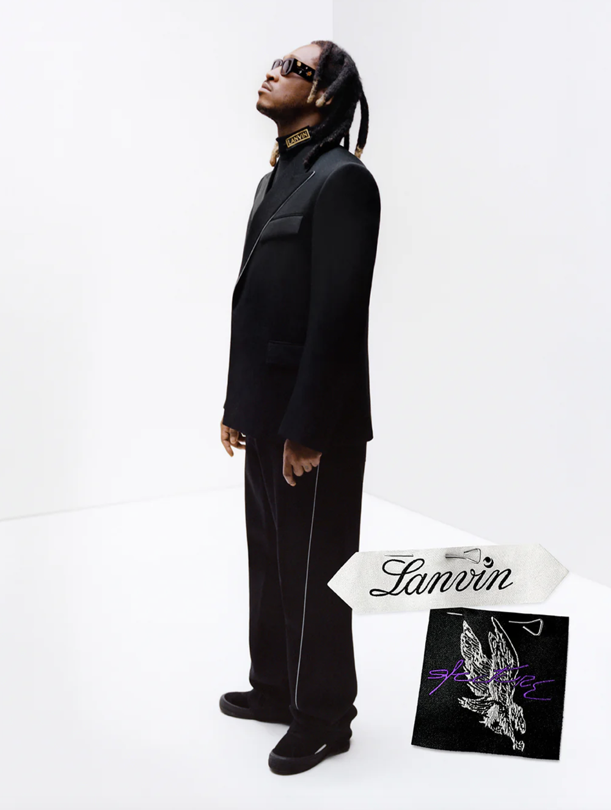
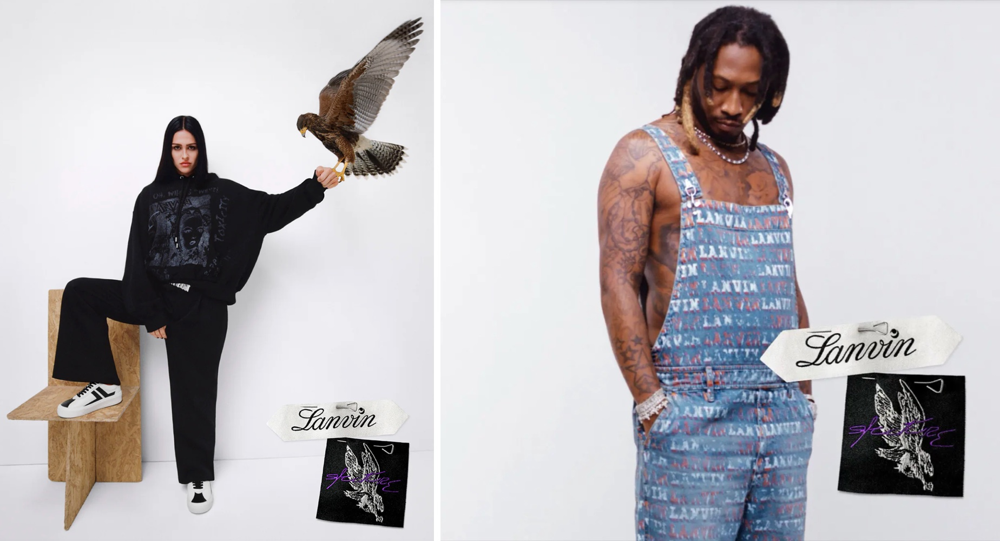
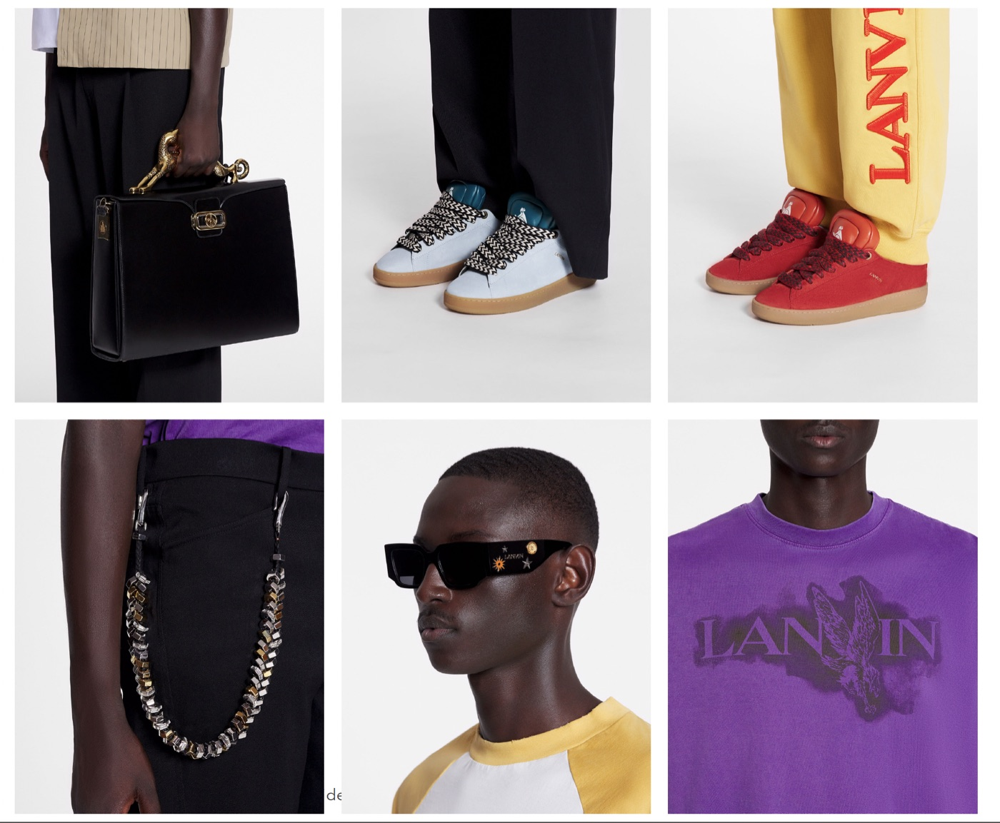
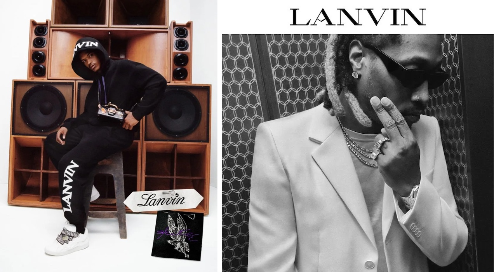

Project 13 — Luxury Fashion / Design & Development
Lanvin Lab × Future
About the project
Fred Saint Foster, for PAZL, designed the Lanvin Lab × Future collection and curated it together with Future, who creative-directed the project: the first of its kind for the house. The collection spanned clothing, footwear and accessories, bringing Future's world into Lanvin's codes without diluting either.
Covered by The New York Times under the headline "Future Designs the First Lanvin Lab Collection".




Credits
- Fashion design & collaborative curation
- Fred Saint Foster for PAZL
- Creative direction
- Future
- House
- Lanvin
- Photography
- Joshua Woods